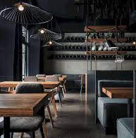

Candle Light Dinner
Candlelight has a timeless charm that creates the perfect backdrop for love to blossom. The enduring companionship of candlelight and romance has woven countless enchanting tales through the ages.

Unique Ambiance
Immerse yourself in a cozy ambiance, complete with elegant nautical decor.Once You come to our reataurent, you will never forget the taste.Come and Enjoy with Family.

Iconic Dish
Kaara Azhagar is a traditional Tamil dish that combines roasted lentils and spices with tamarind, creating a tangy and spicy curry. Unlike regular sambars or kuzhambus, Kaara Azhagar stands out.